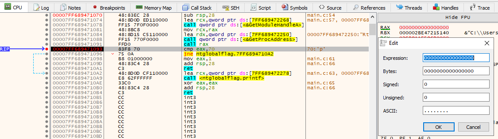
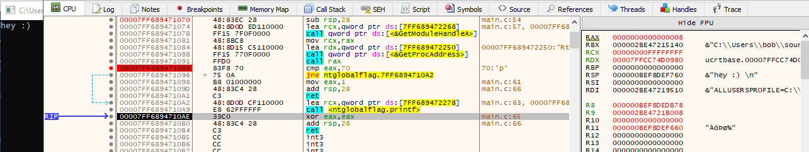

# NtGlobalFlags
•
https://ctf-wiki.github.io/ctf-wiki/reverse/windows/anti-debug/ntglobalflag/•
https://www.aldeid.com/wiki/PEB-Process-Environment-Block/NtGlobalFlag•
https://github.com/cetfor/AntiDBG/blob/89f8fb7fb572aae326c2b0538e9e2b2cf56cf102/antidbg/antidbg.c#L179•
https://osandamalith.com/2016/04/23/debugger-detection-using-ntglobalflag/ - has 64bit asm example at bottom
The PEB stores a field called
NtGlobalFlag.
On 32bit it's stored at PEB offset
0x68.
On 64bit it's stored at PEB offset
0xbc.
When a process is being debugged, 3 flags are set:
• FLG_HEAP_ENABLE_TAIL_CHECK - 0x10
• FLG_HEAP_ENABLE_FREE_CHECK - 0x20
• FLG_HEAP_VALIDATE_PARAMETERS - 0x40
To check if these flags are set, check for
0x70 (10 + 20 + 40).
• This technique doesn't detect Visual Studio debugger.
• These flags are only set when the program is started by the debugger, not when a process is attached.
◇ source:
https://ctf-wiki.github.io/ctf-wiki/reverse/windows/anti-debug/ntglobalflag/#detection-code## Code
There are multiple ways to retrieve
NtGlobalFlag from the PEB:
• via the undocumented
RtlGetNtGlobalFlags function
◇
https://www.geoffchappell.com/studies/windows/win32/ntdll/api/rtl/regutil/getntglobalflags.htm ◇
https://github.com/kyREcon/GetNtGlobalFlags/blob/master/GetNtGlobalFlagsFunc.c• via pure assembly (32bit only if visual studio because it doesn't like x64 asm)
• via the PEB and manual offsets
#include <stdio.h>
#include <Windows.h>
#include <winternl.h>
typedef ULONG(__stdcall* t_RtlGetNtGlobalFlags)(void);
/*
Use undocumented RtlGetNtGlobalFlags function to grab NtGlobalFlag from PEB.
*/
BOOL DebuggerCheck_NtGlobalFlags_Rtl(void)
{
BOOL debugger_present = FALSE;
ULONG nt_global_flags = 0;
t_RtlGetNtGlobalFlags d_RtlGetNtGlobalFlags = (t_RtlGetNtGlobalFlags)GetProcAddress(GetModuleHandleA("ntdll.dll"), "RtlGetNtGlobalFlags");
nt_global_flags = d_RtlGetNtGlobalFlags();
if (nt_global_flags == 0x70) // 112 decimal
debugger_present = TRUE;
//printf("%d \n", nt_global_flags);
return debugger_present;
}
#ifndef _WIN64
/*
32bit only because inline ASM.
WORKS
*/
BOOL DebuggerCheck_NtGlobalFlags_32bitASM(void)
{
BOOL debugger_present = FALSE;
ULONG nt_global_flags = 0;
_asm
{
xor eax, eax; // clear eax
mov eax, fs:[0x30]; // grab PEB, store in eax
mov eax, [eax + 0x68]; // grab NtGlobalFlag value at PEB + offset 0x68, store in eax
mov nt_global_flags, eax; // copy flags from eax into variable
}
if (nt_global_flags == 0x70)
debugger_present = TRUE;
//printf("%d \n", nt_global_flags);
return debugger_present;
}
#endif
/*
Grab the PEB, add the PEB address + offset to NtGlobalFlag, and read the flag value.
When a process is being debugged, 3 flags are set:
- FLG_HEAP_ENABLE_TAIL_CHECK - 0x10
- FLG_HEAP_ENABLE_FREE_CHECK - 0x20
- FLG_HEAP_VALIDATE_PARAMETERS - 0x40
totalling 0x70.
*/
BOOL DebuggerCheck_NtGlobalFlags_PEB(void)
{
BOOL debugger_present = FALSE;
PPEB p_peb = NULL;
PULONG p_nt_global_flags = 0;
// grab PEB
#ifdef _WIN64
p_peb = (PPEB)__readgsqword(0x60);
#else
p_peb = (PPEB)__readfsdword(0x30);
#endif
/*
Calculate pointer to NtGlobalFlag in PEB by doing PEB + offset.
- offset to NtGlobalFlag on 64bit is 0xBC
- offset to NtGlobalFlag on 32bit is 0x68
*/
#ifdef _WIN64
p_nt_global_flags = (PULONG)((PBYTE)p_peb + 0xbc); // 64bit
#else
p_nt_global_flags = (PULONG)((PBYTE)p_peb + 0x68); // 32bit
#endif
printf("peb @ 0x%p \n", p_peb);
printf("NtGlobalFlag @ 0x%p \n", p_nt_global_flags);
printf("\t value: 0x%x \n", *p_nt_global_flags);
if (*p_nt_global_flags == 0x70)
debugger_present = TRUE;
return debugger_present;
}
int main(void)
{
BOOL debugger_present = FALSE;
//debugger_present = DebuggerCheck_NtGlobalFlags_Rtl();
//debugger_present = DebuggerCheck_NtGlobalFlags_32bitASM();
debugger_present = DebuggerCheck_NtGlobalFlags_PEB();
if (debugger_present == TRUE)
return 1;
printf("hey :) \n");
return 0;
}
## Bypass
•
https://www.aldeid.com/wiki/PEB-Process-Environment-Block/NtGlobalFlag#Overcome_the_NtGlobalFlag_detection•
https://ctf-wiki.github.io/ctf-wiki/reverse/windows/anti-debug/ntglobalflag/#change-the-initial-value-of-ntglobalflagHere at the breakpoint we see
70 compared to the value in
EAX.
In EAX is
70.
70 means there's a debugger present.
If we modify the value in EAX to
0, we can bypass the NtGlobalFlag check.
We bypass the check and print
hey :) !
